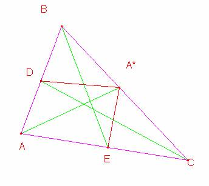
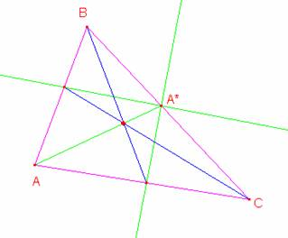

Problema 277[1] Sea A* un punto interior de BC en el triángulo ABC.
Las bisectrices interiores de loa ángulos BA*A y CA*A intersecan a AB y a AC en D y E respectivamente.
Demostrar que AA*, BE y CD son concurrentes.
Hasta aquí lo publicado en Crux y en Yiu.
Solución de William Rodríguez Chamache, Proyecto geometría interactiva (Perú)
De acuerdo a nuestra gráfica para que los segmentos AA*, BE y CD sean concurrentes se debe de cumplir que el producto de los segmentos AD.BA*.CE=BD:CA*AE

Como A*E es bisectriz del ángulo AA*E se cumple que:
AE=a , EC=b entonces AA*=ak y A*C=bk
Además como A*D es bisectriz de BA*A en el triángulo BA*A se cumple.
Si: BA*=c y AA*=ak entonces BD=cm y AD=akm
Finalmente observamos que la relación AD.BA*.CE=BD:CA*AE si cumple por lo tanto los segmentos AA*, BE y CD son concurrentes
